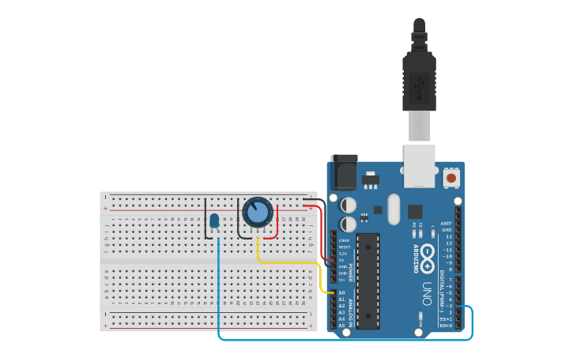

A Placa Arduino Uno é equipada com o microcontrolador ATmega328, originalmente produzido pela Atmel, agora parte da Microchip.
O microcontrolador Atmel Arduino, como o ATmega328 utilizado na placa Arduino Uno, é um chip que executa as instruções de um programa. Ele possui pinos de entrada e saída que permitem a conexão de sensores, motores e outros componentes eletrônicos. O microcontrolador é responsável por processar dados, controlar dispositivos e etc.
A combinação da plataforma Arduino e seus microcontroladores permite a criação de uma ampla variedade de projetos, desde automações simples até sistemas mais complexos, promovendo a educação em tecnologia e engenharia.
Um circuito com um potenciômetro e um LED usando Arduino é um ótimo projeto para aprender sobre controle de intensidade de luz e leitura de entradas analógicas.
Agora aqui em baixo estará uma imagem de ilustração de um circuito com led e arduíno pelo site TINKERCAD
 Tinkercad
Tinkercad
Esse projeto é uma excelente forma de entender os conceitos de entrada analógica e saída PWM (Modulação por Largura de Pulso) no Arduino, além de ser uma introdução prática à programação em C++.
 site utilizado da imagem